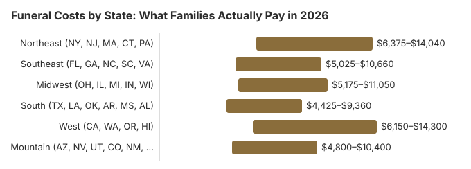

Funeral Costs by State: What Families Actually Pay in 2026
Losing someone you love is overwhelming enough without the shock of unexpected funeral expenses. If you are trying to understand what a funeral will cost in your state, you are not alone. Thousands of families each day face these same questions. This guide shares realistic cost ranges across the United States, drawn from the NFDA 2023 General Price List Study and state regulatory filings, so you can plan with clarity and confidence, knowing that no matter what you choose, there is a path that honors your loved one with dignity.
How we calculate these costs
State-level figures blend the NFDA 2023 General Price List Study, the NFDA 2024 Cremation & Burial Report, and the CANA (Cremation Association of North America) 2024 Annual Report, weighted by CDC NCHS mortality data and projected to 2026 dollars using the BLS Consumer Price Index: Funeral Services (CUUR0000SEGD02). All state averages are cross-checked against locally-filed General Price Lists required under the FTC Funeral Rule (16 CFR Part 453).
National Average Funeral Costs
According to the National Funeral Directors Association (NFDA), the median cost of a funeral with viewing and burial in the United States is approximately $8,300. A funeral with cremation averages around $6,280. Direct cremation, the simplest and most affordable option, had a median of $2,645 when the family supplied the container, and our state averages for it run from about $1,400 to $3,000.
These national medians are helpful as a starting point, but they can be misleading on their own. What a family pays in rural Mississippi may be half of what a family pays in the New York metro area. Your location, the services you choose, and the providers available near you all play a significant role in the final cost. The sections below break down costs by region and state to give you a more accurate picture.
Funeral Costs by Region
Funeral pricing follows general cost-of-living patterns across the country. Here is how the major regions line up for the most common service types. Each regional range runs from the lowest low to the highest high among the listed states, using the same ranges printed on each state page, and real quotes still vary within a region between urban and rural providers.
| Region | Traditional Burial Range | Cremation Range | Direct Cremation Range |
|---|---|---|---|
| Northeast (NY, NJ, MA, CT, PA) | $6,375 – $14,040 | $5,280 – $10,400 | $1,400 – $3,640 |
| Southeast (FL, GA, NC, SC, VA) | $5,025 – $10,660 | $4,320 – $8,320 | $1,120 – $2,660 |
| Midwest (OH, IL, MI, IN, WI) | $5,175 – $11,050 | $4,480 – $8,580 | $1,120 – $2,800 |
| South (TX, LA, OK, AR, MS, AL) | $4,425 – $9,360 | $3,840 – $7,540 | $980 – $2,520 |
| West (CA, WA, OR, HI) | $6,150 – $14,300 | $5,120 – $10,660 | $1,330 – $4,200 |
| Mountain (AZ, NV, UT, CO, NM, ID, MT) | $4,800 – $10,400 | $4,160 – $8,060 | $1,050 – $2,520 |

Keep in mind that a major city within any region will almost always be on the higher end. For example, funeral costs in Chicago tend to exceed the Midwest average, just as San Francisco prices run well above California state averages.
State-by-State Funeral Cost Table
The table below gives estimated cost ranges for a traditional funeral with burial, a funeral with cremation, and direct cremation in 20 of the most-searched states. Each range matches the one on that state's own page: 75% to 130% of our state average for a traditional funeral, 80% to 130% for cremation with a service, and 70% to 140% for direct cremation. Treat them as general guidance rather than exact quotes.
| State | Traditional Burial (Est.) | Cremation with Service (Est.) | Direct Cremation (Est.) |
|---|---|---|---|
| California | $7,950 – $13,780 | $6,240 – $10,140 | $1,540 – $3,080 |
| Texas | $5,400 – $9,360 | $4,640 – $7,540 | $1,190 – $2,380 |
| Florida | $5,850 – $10,140 | $4,960 – $8,060 | $1,260 – $2,520 |
| New York | $8,100 – $14,040 | $6,400 – $10,400 | $1,820 – $3,640 |
| Pennsylvania | $6,375 – $11,050 | $5,280 – $8,580 | $1,400 – $2,800 |
| Illinois | $6,375 – $11,050 | $5,280 – $8,580 | $1,400 – $2,800 |
| Ohio | $5,325 – $9,230 | $4,480 – $7,280 | $1,190 – $2,380 |
| Georgia | $5,175 – $8,970 | $4,480 – $7,280 | $1,190 – $2,380 |
| North Carolina | $5,325 – $9,230 | $4,480 – $7,280 | $1,190 – $2,380 |
| Michigan | $5,400 – $9,360 | $4,640 – $7,540 | $1,190 – $2,380 |
| New Jersey | $7,650 – $13,260 | $6,080 – $9,880 | $1,680 – $3,360 |
| Virginia | $6,150 – $10,660 | $5,120 – $8,320 | $1,330 – $2,660 |
| Washington | $6,600 – $11,440 | $5,440 – $8,840 | $1,470 – $2,940 |
| Massachusetts | $7,800 – $13,520 | $6,240 – $10,140 | $1,750 – $3,500 |
| Arizona | $5,400 – $9,360 | $4,640 – $7,540 | $1,120 – $2,240 |
| Colorado | $6,000 – $10,400 | $4,960 – $8,060 | $1,260 – $2,520 |
| Mississippi | $4,425 – $7,670 | $3,840 – $6,240 | $980 – $1,960 |
| Oklahoma | $4,575 – $7,930 | $4,000 – $6,500 | $980 – $1,960 |
| Alabama | $4,800 – $8,320 | $4,160 – $6,760 | $1,260 – $2,520 |
| Connecticut | $7,650 – $13,260 | $6,080 – $9,880 | $1,680 – $3,360 |
If your state is not listed above, browse the full directory below or use the regional ranges in the previous section as a reasonable estimate. For the most accurate pricing, contact two or three funeral homes in your area and request their General Price List.
Browse All 50 States
Click any state below for a detailed guide with average costs, city breakdowns, consumer rights, and payment assistance options.
Funeral Costs in Major U.S. Cities
Metropolitan areas often have higher funeral costs than state averages. Browse pricing for the largest U.S. metro areas:
View all 50 metro area funeral costs →
What Drives Funeral Cost Differences Between States
It can feel confusing to learn that the same type of service might cost $6,000 in one state and $12,000 in another. Several factors explain these differences:
- Cost of living. States with higher housing costs, wages, and real estate prices naturally have higher funeral home overhead, which is passed along to families.
- State regulations. Some states have more stringent licensing, facility, and environmental requirements that increase operating costs for funeral providers.
- Competition. Areas with more funeral homes tend to have more competitive pricing. Rural communities with only one provider may see higher prices.
- Cultural and community expectations. In some regions, elaborate ceremonies and specific traditions are the norm, which can drive costs higher.
- Urban vs. rural location. A funeral home in downtown Manhattan has very different expenses than one in a small Mississippi town, and pricing reflects that.
- Cremation rates. States with higher cremation rates often see more competitive cremation pricing, since more providers offer the service.
Understanding these factors can help you put quoted prices in context. A price that seems high nationally may actually be typical for your area, and a price that seems low may still warrant careful review of what is included.
How to Research Costs in Your State
Having realistic cost expectations before you contact a funeral home puts you in a stronger position. Here are some practical steps:
- Call at least two or three funeral homes. Ask each one for their General Price List (GPL). They are legally required to provide this over the phone or in person, without asking for your name or committing you to anything.
- Compare line by line. Look at specific fees rather than just the package total. Basic services fees, transportation, caskets, and cemetery charges can vary widely between providers, even in the same town.
- Search for your state's funeral board. Many states publish consumer guides or price surveys. Try searching for "[your state] funeral board consumer guide" or "[your state] attorney general funeral prices."
- Check online pricing tools. Websites like the Funeral Consumers Alliance and Parting.com aggregate some pricing data, though availability varies by area.
- Ask about everything. Do not assume any service is included. Ask about cash-advance items (flowers, obituary notices, death certificates) that may be listed separately from the funeral home's own charges.
Taking even 30 minutes to compare options can save families hundreds or thousands of dollars while still honoring a loved one beautifully.
Your Consumer Rights
The FTC Funeral Rule is a federal regulation that protects every family in the United States, regardless of state. Under this rule:
- Funeral homes must provide an itemized General Price List to anyone who asks.
- You have the right to choose only the services and goods you want. Providers cannot require you to purchase a package.
- Funeral homes must accept caskets and urns purchased from third-party retailers without charging a handling fee.
- Providers cannot make false claims about legal requirements, such as telling you embalming is required by law when it is not.
If you believe a funeral home has violated the Funeral Rule, you can file a complaint with the Federal Trade Commission. Knowing your rights can give you quiet confidence during a difficult time.
Frequently Asked Questions
What is the average funeral cost in the US?
The national median cost for a funeral with viewing and burial is approximately $8,300, while a funeral with cremation averages around $6,280 (NFDA data). Direct cremation, the most affordable option, has NFDA 2023 medians of $2,645 to $2,750, and our state averages for it run from $1,400 to $3,000. However, costs vary considerably by state, provider, and the services selected.
Which states have the cheapest funerals?
States in the South and Mountain West regions tend to have the lowest funeral costs. Mississippi, Alabama, Oklahoma, Arkansas, and New Mexico frequently report average traditional burial costs well below the national median, often in the $5,500 to $7,500 range. Rural areas within any state also tend to be less expensive.
Which states have the most expensive funerals?
Northeastern states and major coastal metro areas generally have the highest funeral costs. New York, New Jersey, Massachusetts, Connecticut, and California often see traditional funeral costs from $9,000 to $14,000 or more. High cost of living and expensive real estate drive much of this premium.
Why do funeral costs vary so much by state?
The main drivers are cost of living, real estate prices (which affect funeral home overhead), state-level regulations, the degree of competition among local providers, cultural expectations around services, and whether you are in an urban or rural area. All of these combine to create significant pricing variation across the country.
Can I negotiate funeral prices?
Yes. You can request itemized pricing, select only the services you need, compare prices across multiple funeral homes, purchase caskets from third-party retailers, and ask about simpler or more affordable alternatives. Respectful comparison shopping is both common and appropriate, and the FTC Funeral Rule supports your right to do so.
Is embalming required by law?
In most states, embalming is not legally required. Some funeral homes have their own policies requiring embalming for open-casket viewings, but refrigeration and dry ice are usually acceptable alternatives. If a provider tells you embalming is mandatory, ask them to cite the specific state law. It is rarely an actual legal requirement.
How much does cremation cost compared to burial?
Cremation is generally less expensive than traditional burial. A funeral with cremation averages about $6,280 nationally, compared to $8,300 for a funeral with burial. Direct cremation, without any ceremony or viewing, averages about $1,400 to $3,000 depending on the state you are in, and individual providers can price below or above that.
What is the FTC Funeral Rule?
The FTC Funeral Rule is a federal regulation requiring funeral providers to give consumers itemized price lists, to allow consumers to select only the services they want, and to accept caskets purchased from outside vendors without charging a handling fee. It also prohibits providers from making false claims about legal requirements for services like embalming.
Are there ways to save on funeral costs?
Several approaches can help families reduce costs while still honoring a loved one. Consider direct cremation or direct burial, compare prices from multiple providers, purchase caskets or urns from third-party retailers, hold a memorial service at a non-funeral-home location, and ask about veteran benefits, government assistance, or community support programs that may be available to your family.
How do I get itemized pricing from a funeral home?
Under the FTC Funeral Rule, every funeral home must provide a General Price List (GPL) to anyone who asks. You can request this in person or over the phone. You do not need to provide your name, commit to any services, or schedule an appointment. Simply ask for the GPL and they are legally required to provide it promptly.
Save Money on Funeral Costs
These comparison guides can help you find the best prices on funeral products and services:
- Best Burial Insurance Companies (2026): Compare top final expense insurance plans, premiums by age, and coverage options.
- Best Online Casket Retailers: Save 50-80% on caskets by buying direct. Compare prices from Titan Casket, Costco, Walmart, and more.
- Best Places to Buy Cremation Urns: Compare urn styles, materials, and prices from top retailers.
- Prepaid Funeral Plans Compared: Compare providers, understand price-lock guarantees, and avoid preneed pitfalls.
- Funeral Insurance Comparison: Final expense vs. burial vs. pre-need insurance: which is right for you?
- Cremation vs. Burial Calculator: Estimate and compare costs for cremation and burial based on your state and preferences.
Related Guides
More on comparing costs where you live:
- Cremation Costs by State: Direct cremation and cremation-with-service pricing for all 50 states.
- Burial Costs by State: Cemetery plots, caskets, vaults, and total burial costs for all 50 states.
- 2026 National Funeral Cost Index: Our flagship research report with all 50 states, metro comparisons, inflation trends, and methodology.
- Funeral Costs by Religion: How Catholic, Jewish, Muslim, Hindu, Buddhist, and other traditions affect funeral costs.
- State Funeral Regulations Directory: Funeral laws, licensing boards, and consumer protections for all 50 states.
- Cremation vs. Burial Cost: A detailed comparison of costs, process, and considerations for each option.
- Direct Cremation Cost: What direct cremation includes, what it costs, and how to arrange it.
- Funeral Cost Breakdown: A line-by-line look at every fee and charge you may encounter.
- Funeral Payment Assistance: Programs, benefits, and resources that may help cover funeral expenses.
- Questions to Ask a Funeral Home: An essential checklist to bring with you before committing to any provider.
- Affordable Funeral Options: Dignified ways to honor a loved one on a limited budget.
Resources That May Help
- Funeral Consumers AllianceIndependent consumer advocacy for funeral rights
- Parting.comCompare funeral home prices in your area
- Best Burial Insurance CompaniesCompare plans, premiums, and coverage from top providers
- Funeral Insurance ComparisonUnderstand different insurance types and find the right fit
- Payment Assistance GuideGovernment programs and financial help for funeral costs
Get Our Free Funeral Cost Guide
Sign up for occasional email updates on state funeral prices and changes to state rules.
No spam. Unsubscribe anytime. We respect your privacy.
Sources & review: State figures on this page draw on the NFDA 2023 General Price List Study, the NFDA 2024 Cremation & Burial Report, the CANA (Cremation Association of North America) 2024 Annual Report, the BLS Consumer Price Index: Funeral Services (CUUR0000SEGD02), CDC NCHS mortality data, the FTC Funeral Rule (16 CFR Part 453), the Funeral Consumers Alliance, the VA burial allowance (38 CFR § 3.1600) and the SSA lump-sum death payment (section 202(i) of the Social Security Act). Paul Paradis, Founder & Editor, reviewed this state table on October 22, 2026; the national figures were updated October 2, 2026. Corrections: contact@funeralcostanalyzer.com.
Disclaimer: These are planning estimates, not a quote or professional advice. Full disclaimer.